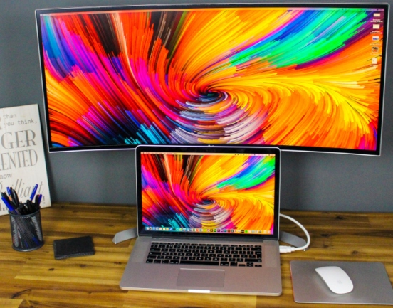

NOMADAS DIGITALES
¿Qué es una Visa Nomada Digital? Para los que aún no lo saben, Un nómada digital es un profesional que usa las nuevas tecnologías para trabajar, y que lleva a cabo un estilo de vida nómada.
Por lo general, los nómadas digitales trabajan de forma remota desde su casa, cafeterías, bibliotecas públicas, etc. en lugar de hacerlo en un lugar de trabajo fijo.
Actualmente la cantidad de países que estan creando y brindando visas para nomadas digitales va en aumento. Esto permite que cada vez más trabajores remotos tengan la posibilidad de viajar y vivir hasta 12 meses en el destino elegido.